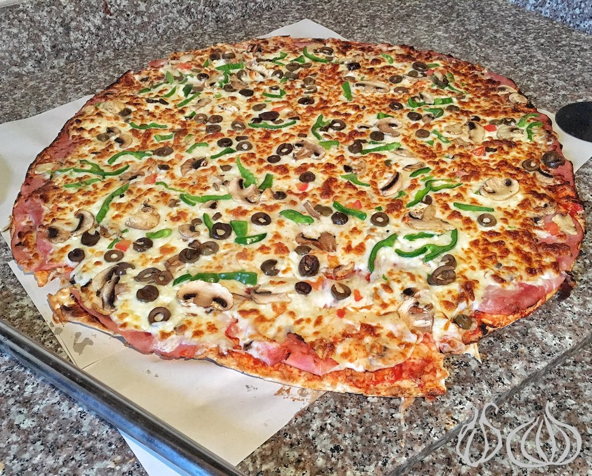

Pizza

Vegeterian Pizza
Pizza is a dish of Italian origin consisting of a usually round, flat base of leavened
wheat-based dough topped with tomatoes, cheese, and often various other ingredients,
which is then baked at a high temperature, traditionally in a wood-fired oven.
A small pizza is sometimes called a pizzetta.
Ingredients:
- Pizza Sauce
- Mozzarella Cheese
- Pepper
- Onions
- Mushrooms
- Olives
Steps to make a pizza:
- Spread pizza sauce evenly over the two pizzas, leaving about 1 inch bare around
the edges. Evenly distribute the spinach on top of the sauce, followed by the cheese
- Top the pizzas with artichoke, bell pepper, red onion, tomatoes, olives and almonds
- Bake pizzas individually on the top rack until the crust is golden and the cheese
is golden and bubbly, about 10 to 12 minutes
- Transfer pizzas to a cutting board and sprinkle with with fresh basil, red pepper flakes
and Parmesan, if using. Slice and serve! Leftover pizza keeps well in the refrigerator
for 4 days, or for several months in the freezer.